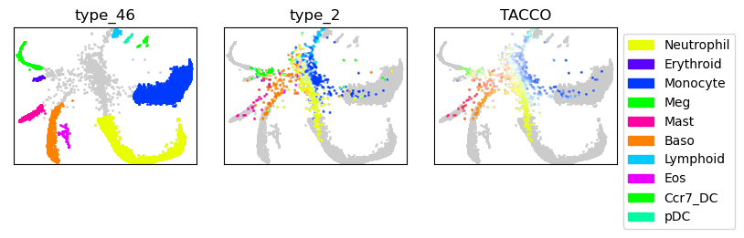
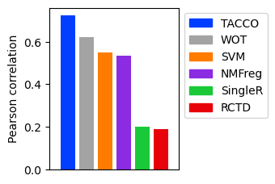
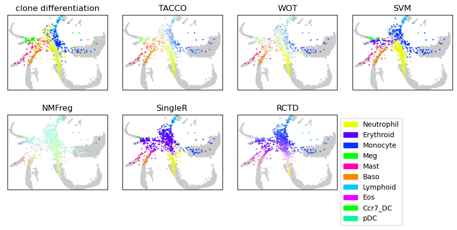

Single-cell differentiation¶
This example uses TACCO to predict the fate of single cells in a hematopoietic setting comparing against experimental ground truth (Weinreb et al.) and other methods.
(Weinreb et al.): Weinreb C, Rodriguez-Fraticelli A, Camargo FD, Klein AM. Lineage tracing on transcriptional landscapes links state to fate during differentiation. Science. 2020 Feb 14;367(6479):eaaw3381. doi: 10.1126/science.aaw3381. Epub 2020 Jan 23. PMID: 31974159; PMCID: PMC7608074.
[1]:
import os
import sys
import matplotlib
import matplotlib.pyplot as plt
import pandas as pd
import numpy as np
import anndata as ad
import tacco as tc
# The notebook expects to be executed either in the workflow directory or in the repository root folder...
sys.path.insert(1, os.path.abspath('workflow' if os.path.exists('workflow/common_code.py') else '..'))
import common_code
Load data¶
[2]:
data_path = common_code.find_path('results/single_cell_differentiation/data')
plot_path = common_code.find_path('results/single_cell_differentiation')
env_path = common_code.find_path('results/env_links')
[3]:
d4d6 = ad.read(f'{data_path}/d4_d6_differentiation.h5ad')
[4]:
d2 = ad.read(f'{data_path}/d2_differentiation.h5ad')
Plotting options¶
[5]:
highres = False
default_dpi = 100.0 # matplotlib.rcParams['figure.dpi']
if highres:
matplotlib.rcParams['figure.dpi'] = 648.0
hr_ext = '_hd'
else:
matplotlib.rcParams['figure.dpi'] = default_dpi
hr_ext = ''
axsize = np.array([4,3])*0.5
x = 'SPRING-x'
y = 'SPRING-y'
dummy_val = 'dummy'
only_gray = {dummy_val:'#CCCCCC'}
color_dict = {
'Neutrophil': '#e9ff00',
'Erythroid': '#5a00ff',
'Monocyte': '#0039ff',
'Meg': '#00ff00',
'Mast': '#ff00a3',
'Baso': '#ff8100',
'Lymphoid': '#00caff',
'Eos': '#eb00ff',
'Ccr7_DC': '#00ff00',
'pDC': '#00faa4',
}
Run fate prediction¶
Use a set of different methods for comparison
[6]:
method_configs = {
'TACCO': { 'method': 'OT', 'multi_center': 10, }, # multi_center=10 takes into account variation within a single class
'WOT': { 'method': 'WOT', },
'SVM': { 'method': 'svm', },
'NMFreg': { 'method': 'NMFreg', },
'SingleR': { 'method': 'SingleR', 'conda_env': f'{env_path}/SingleR_env', },
'RCTD': { 'method': 'RCTD', 'conda_env': f'{env_path}/RCTD_env', },
}
benchmark_results = {}
for method, params in method_configs.items():
print(f'running method {method!r}')
tc.tl.annotate(d2, d4d6, annotation_key='Cell type annotation', result_key=method, **method_configs[method], assume_valid_counts=True,)
plt.close("all") # suppress side-effect plots from NMFreg
running method 'TACCO'
Starting preprocessing
Annotation profiles were not found in `reference.varm["Cell type annotation"]`. Constructing reference profiles with `tacco.preprocessing.construct_reference_profiles` and default arguments...
Finished preprocessing in 2.26 seconds.
Starting annotation of data with shape (976, 16624) and a reference of shape (9165, 16624) using the following wrapped method:
+- platform normalization: platform_iterations=0, gene_keys=Cell type annotation, normalize_to=adata
+- multi center: multi_center=10 multi_center_amplitudes=True
+- bisection boost: bisections=4, bisection_divisor=3
+- core: method=OT annotation_prior=None
mean,std( rescaling(gene) ) 0.22523548816215352 0.4240753318419876
bisection run on 1
bisection run on 0.6666666666666667
bisection run on 0.4444444444444444
bisection run on 0.2962962962962963
bisection run on 0.19753086419753085
bisection run on 0.09876543209876543
Finished annotation in 14.39 seconds.
running method 'WOT'
Starting preprocessing
Finished preprocessing in 2.03 seconds.
Starting annotation of data with shape (976, 16624) and a reference of shape (9165, 16624) using the following wrapped method:
+- multi center: multi_center=None multi_center_amplitudes=True
+- core: method=WOT annotation_prior=None
Finished annotation in 28.16 seconds.
running method 'SVM'
Starting preprocessing
Finished preprocessing in 2.06 seconds.
Starting annotation of data with shape (976, 16624) and a reference of shape (9165, 16624) using the following wrapped method:
+- multi center: multi_center=None multi_center_amplitudes=True
+- core: method=svm annotation_prior=None
Finished annotation in 8.68 seconds.
running method 'NMFreg'
Starting preprocessing
Finished preprocessing in 2.08 seconds.
Starting annotation of data with shape (976, 16624) and a reference of shape (9165, 16624) using the following wrapped method:
+- multi center: multi_center=None multi_center_amplitudes=True
+- core: method=NMFreg annotation_prior=None
Finished annotation in 122.39 seconds.
running method 'SingleR'
Starting preprocessing
Finished preprocessing in 2.05 seconds.
Starting annotation of data with shape (976, 16624) and a reference of shape (9165, 16624) using the following wrapped method:
+- multi center: multi_center=None multi_center_amplitudes=True
+- core: method=SingleR annotation_prior=None conda_env=/ahg/regevdata/projects/mouse_CRC/rerun/clean_tacco_examples/results/env_links/SingleR_env
SCprep...time 0.2952430248260498
SCprep...time 1.15244722366333
[1] "reference.h5ad" "data.h5ad" "result"
[4] "Cell type annotation" "True" "False"
[7] "de" "classic"
[1] "reading data"
[1] "csr"
[1] "reading reference"
[1] "csr"
[1] "running SingleR"
Warning message:
package 'hdf5r' was built under R version 4.1.1
Attaching package: 'SparseM'
The following object is masked from 'package:base':
backsolve
Warning message:
package 'SparseM' was built under R version 4.1.3
Loading required package: SummarizedExperiment
Loading required package: MatrixGenerics
Loading required package: matrixStats
Attaching package: 'MatrixGenerics'
The following objects are masked from 'package:matrixStats':
colAlls, colAnyNAs, colAnys, colAvgsPerRowSet, colCollapse,
colCounts, colCummaxs, colCummins, colCumprods, colCumsums,
colDiffs, colIQRDiffs, colIQRs, colLogSumExps, colMadDiffs,
colMads, colMaxs, colMeans2, colMedians, colMins, colOrderStats,
colProds, colQuantiles, colRanges, colRanks, colSdDiffs, colSds,
colSums2, colTabulates, colVarDiffs, colVars, colWeightedMads,
colWeightedMeans, colWeightedMedians, colWeightedSds,
colWeightedVars, rowAlls, rowAnyNAs, rowAnys, rowAvgsPerColSet,
rowCollapse, rowCounts, rowCummaxs, rowCummins, rowCumprods,
rowCumsums, rowDiffs, rowIQRDiffs, rowIQRs, rowLogSumExps,
rowMadDiffs, rowMads, rowMaxs, rowMeans2, rowMedians, rowMins,
rowOrderStats, rowProds, rowQuantiles, rowRanges, rowRanks,
rowSdDiffs, rowSds, rowSums2, rowTabulates, rowVarDiffs, rowVars,
rowWeightedMads, rowWeightedMeans, rowWeightedMedians,
rowWeightedSds, rowWeightedVars
Loading required package: GenomicRanges
Loading required package: stats4
Loading required package: BiocGenerics
Loading required package: parallel
Attaching package: 'BiocGenerics'
The following objects are masked from 'package:parallel':
clusterApply, clusterApplyLB, clusterCall, clusterEvalQ,
clusterExport, clusterMap, parApply, parCapply, parLapply,
parLapplyLB, parRapply, parSapply, parSapplyLB
The following objects are masked from 'package:stats':
IQR, mad, sd, var, xtabs
The following objects are masked from 'package:base':
Filter, Find, Map, Position, Reduce, anyDuplicated, append,
as.data.frame, basename, cbind, colnames, dirname, do.call,
duplicated, eval, evalq, get, grep, grepl, intersect, is.unsorted,
lapply, mapply, match, mget, order, paste, pmax, pmax.int, pmin,
pmin.int, rank, rbind, rownames, sapply, setdiff, sort, table,
tapply, union, unique, unsplit, which.max, which.min
Loading required package: S4Vectors
Attaching package: 'S4Vectors'
The following objects are masked from 'package:Matrix':
expand, unname
The following object is masked from 'package:hdf5r':
values
The following objects are masked from 'package:data.table':
first, second
The following objects are masked from 'package:base':
I, expand.grid, unname
Loading required package: IRanges
Attaching package: 'IRanges'
The following object is masked from 'package:data.table':
shift
Loading required package: GenomeInfoDb
Loading required package: Biobase
Welcome to Bioconductor
Vignettes contain introductory material; view with
'browseVignettes()'. To cite Bioconductor, see
'citation("Biobase")', and for packages 'citation("pkgname")'.
Attaching package: 'Biobase'
The following object is masked from 'package:MatrixGenerics':
rowMedians
The following objects are masked from 'package:matrixStats':
anyMissing, rowMedians
Warning message:
package 'matrixStats' was built under R version 4.1.3
Finished annotation in 215.69 seconds.
running method 'RCTD'
Starting preprocessing
Finished preprocessing in 2.0 seconds.
Starting annotation of data with shape (976, 16624) and a reference of shape (9165, 16624) using the following wrapped method:
+- multi center: multi_center=None multi_center_amplitudes=True
+- core: method=RCTD annotation_prior=None conda_env=/ahg/regevdata/projects/mouse_CRC/rerun/clean_tacco_examples/results/env_links/RCTD_env
[1] "reference.h5ad" "data.h5ad" "result"
[4] "0" "1" "full"
[7] "Cell type annotation" "x" "y"
[10] "300"
[1] "reading data"
[1] "csr"
[1] "reading reference"
[1] "csr"
[1] "running RCTD"
Baso Ccr7_DC Eos Erythroid Lymphoid Mast Meg
1430 24 59 87 98 318 272
Monocyte Neutrophil pDC
3223 3642 12
Attaching package: 'SparseM'
The following object is masked from 'package:base':
backsolve
Begin: process_cell_type_info
process_cell_type_info: number of cells in reference: 9165
process_cell_type_info: number of genes in reference: 16624
End: process_cell_type_info
create.RCTD: getting regression differentially expressed genes:
get_de_genes: Baso found DE genes: 153
get_de_genes: Ccr7_DC found DE genes: 290
get_de_genes: Eos found DE genes: 112
get_de_genes: Erythroid found DE genes: 176
get_de_genes: Lymphoid found DE genes: 130
get_de_genes: Mast found DE genes: 97
get_de_genes: Meg found DE genes: 171
get_de_genes: Monocyte found DE genes: 180
get_de_genes: Neutrophil found DE genes: 139
get_de_genes: pDC found DE genes: 380
get_de_genes: total DE genes: 1475
create.RCTD: getting platform effect normalization differentially expressed genes:
get_de_genes: Baso found DE genes: 315
get_de_genes: Ccr7_DC found DE genes: 607
get_de_genes: Eos found DE genes: 281
get_de_genes: Erythroid found DE genes: 572
get_de_genes: Lymphoid found DE genes: 435
get_de_genes: Mast found DE genes: 292
get_de_genes: Meg found DE genes: 384
get_de_genes: Monocyte found DE genes: 363
get_de_genes: Neutrophil found DE genes: 304
get_de_genes: pDC found DE genes: 853
get_de_genes: total DE genes: 3109
fitBulk: decomposing bulk
chooseSigma: using initial Q_mat with sigma = 1
Likelihood value: 399948.20519735
Sigma value: 0.84
Likelihood value: 395804.961806008
Sigma value: 0.69
Likelihood value: 393229.045037818
Sigma value: 0.61
Likelihood value: 392458.511099675
Sigma value: 0.55
Likelihood value: 392177.634519394
Sigma value: 0.53
Likelihood value: 392141.960359694
Sigma value: 0.52
Likelihood value: 392135.082178793
Sigma value: 0.52
Finished annotation in 415.6 seconds.
Plot results¶
Plot gray background of day 2 data when showing annotation of day 4 and day 6 data and vice versa.
[7]:
joint = ad.concat([d2,d4d6],)
for method in method_configs.keys():
joint.obsm[method] = d2.obsm[method].reindex(joint.obs.index)
joint.obsm['type_2'] = d2.obsm['clone_fate'].reindex(joint.obs.index)
joint.obs['type_46'] = d4d6.obs['Cell type annotation'].reindex(joint.obs.index)
dummy_key = tc.utils.find_unused_key(joint.obs)
joint.obs[dummy_key] = dummy_val
[8]:
fig,axs = tc.pl.subplots(3, axsize=axsize)
tc.pl.scatter(joint, joint=True, position_key=[x,y], ax=axs[0,0], legend=False, point_size=3, keys=dummy_key, colors=only_gray, noticks=True);
tc.pl.scatter(joint, joint=True, position_key=[x,y], ax=axs[0,0], legend=False, point_size=3, keys='type_46', colors=color_dict, noticks=True);
tc.pl.scatter(joint, joint=True, position_key=[x,y], ax=axs[0,1], legend=False, point_size=3, keys=dummy_key, colors=only_gray, noticks=True);
tc.pl.scatter(joint, joint=True, position_key=[x,y], ax=axs[0,1], legend=False, point_size=3, keys='type_2', colors=color_dict, noticks=True);
tc.pl.scatter(joint, joint=True, position_key=[x,y], ax=axs[0,2], legend=False, point_size=3, keys=dummy_key, colors=only_gray, noticks=True);
tc.pl.scatter(joint, joint=True, position_key=[x,y], ax=axs[0,2], legend=True, point_size=3, keys='TACCO', colors=color_dict, noticks=True);

Compare the correlations of all methods
[9]:
corrs = { method: tc.ev.compute_err(d2, method, 'clone_fate', err_method='corr')[method] for method in method_configs.keys() }
[10]:
fig,axs = tc.pl.subplots(axsize=np.array([4,5])*0.4)
ticks = np.arange(len(method_configs))
colors = [common_code.method_color(m) for m in method_configs.keys()]
ax = axs[0,0]
ax.bar(ticks, corrs.values(), color=colors)
ax.set_xticks([])
ax.set_xmargin(.1)
ax.set_ylabel('Pearson correlation')
import matplotlib.patches
ax.legend(handles=[matplotlib.patches.Patch(color=color, label=ind) for (ind, color) in zip(method_configs.keys(), colors) ],
bbox_to_anchor=(1, 1), loc='upper left', ncol=1)
[10]:
<matplotlib.legend.Legend at 0x2ae78bbcaa60>

Show the annotations of all methods
[11]:
n_panels = len(method_configs)+1
fig,axs = tc.pl.subplots((n_panels+1)//2, 2, axsize=axsize, y_padding=0.5)
axs = axs.flatten()
tc.pl.scatter(joint, joint=True, position_key=[x,y], ax=axs[0], legend=False, point_size=3, keys=dummy_key, colors=only_gray, noticks=True)
tc.pl.scatter(joint, joint=True, position_key=[x,y], ax=axs[0], legend=False, point_size=3, keys='type_2', colors=color_dict, noticks=True)
axs[0].set_title('clone differentiation')
for i_method,method in enumerate(method_configs.keys()):
tc.pl.scatter(joint, joint=True, position_key=[x,y], ax=axs[i_method+1], legend=False, point_size=3, keys=dummy_key, colors=only_gray, noticks=True)
tc.pl.scatter(joint, joint=True, position_key=[x,y], ax=axs[i_method+1], legend=(i_method == len(method_configs)-1), point_size=3, keys=method, colors=color_dict, noticks=True)
axs[i_method+1].set_title(method)
if len(method_configs) + 1 != len(axs):
axs[-1].axis('off')

[ ]: